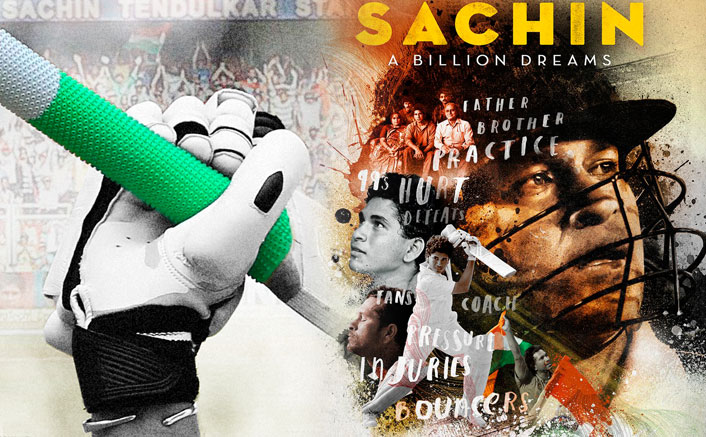

gopal
Mr. Sachin Ramesh Tendulkar
The God of Cricket

- 1994: Arjuna Award recipient for achievements in cricket[2]
- 1997: Tendulkar was one of the five cricketers selected as Wisden Cricketer of the Year[3}
- 1997/98: India's highest sporting honour – Rajiv Gandhi Khel Ratna[4]
- 1999: Padma Shri – India's fourth highest civilian award[5]
- 2008: Padma Vibhushan – India's second highest civilian award[6]
- 2010: ICC Cricketer of the year – Highest award in the ICC listings
- 2010: LG People's Choice Award
- 2014: Bharat Ratna – India's highest civilian honour[7]
- Wisden Leading Cricketer in the World 1997, 2010